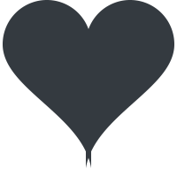

Veronicodes
Fixing bugs one semicolon at a time;

Veronica Eulenberg is a full stack engineer with 5 years experience. She has collaborated on user-focused, responsive-design, and cross-browser compatible solutions. Her strengths are in CSS, JavaScript, troubleshooting, and modifying WordPress site functionality and design.
HTML, CSS, JavaScript, jQuery, ReactJS, NodeJS, PHP, MySQL, and WordPress.
Seeking to work with professional people that have a positive attitude and a good sense of humor.
